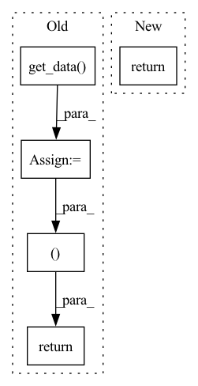

Pattern ID :12714
Before Change
target = self.windows.metadata["target"]
keys = ["i_supercrop_in_trial", "i_start_in_trial", "i_stop_in_trial"]
supercrop_ind = self.windows.metadata.iloc[index][keys].to_list()
x = self.windows[index].get_data() .squeeze(0)
return x, target[index], supercrop_ind
def __len__(self):
return len(self.windows.events)
After Change
def __getitem__(self, index):
x = self.windows.get_data(item=index)[0]
md = self.windows.metadata.iloc[index]
return x, md["target"], md[self.md_keys].to_list()
def __len__(self):
return len(self.windows.events)In pattern: SUPERPATTERN
Frequency: 3
Non-data size: 5
Instances Fragment ID: 43054743
Project Name: braindecode/braindecode
Commit Name: 92f69431496e540ea0bdb3b0456eb49604d795d0
Time: 2020-02-25
Author: hubert.jbanville@gmail.com
File Name: braindecode/datasets/base.py
M Class Name: WindowsDataset
N Class Name: WindowsDataset
M Method Name: __getitem__(2)
N Method Name: __getitem__(2)
M Parent Class: BaseDataset
N Parent Class: BaseDataset
M File Name: braindecode/datasets/base.py
N File Name: braindecode/datasets/base.py
M Start Line: 65
M End Line: 69
N Start Line: 66
N End Line: 68
Before Change
y : int | float
window target
x = np.squeeze(self.windows[index].get_data() , axis=0)
if self.target == "target":
y = self.windows.metadata.iloc[index]["target"]
else:
y = self.windows.info["subject_info"][self.target]
inds = self.windows.metadata.iloc[index]["supercrop_inds"]
assert len(inds) == 3
if self.transforms is not None:
for transform in self.transforms:
x = transform(x)
return x.astype(np.float32), y, inds
def __len__(self):
return self.windows.metadata.shape[0]
// XXX: The following would fail if data has not been preloaded yet:After Change
target = self.windows.events[:,-1]
keys = ["i_supercrop_in_trial", "i_start_in_trial", "i_stop_in_trial"]
info = self.windows.metadata.iloc[index][keys].to_list()
return self.windows[index], target[index], info
def __len__(self):
return len(self.windows.events) Fragment ID: 43054745
Project Name: braindecode/braindecode
Commit Name: 6ffc3990beff8527952b2abea83e9dfec3691e4a
Time: 2020-01-23
Author: gemeinl@informatik.uni-freiburg.de
File Name: braindecode/datasets/dataset.py
M Class Name: WindowsDataset
N Class Name: WindowsDataset
M Method Name: __getitem__(2)
N Method Name: __getitem__(2)
M Parent Class: BaseDataset
N Parent Class: Dataset
M File Name: braindecode/datasets/dataset.py
N File Name: braindecode/datasets/dataset.py
M Start Line: 59
M End Line: 73
N Start Line: 42
N End Line: 45
Before Change
// interpolation="continuous").get_data())
data = np.asarray(data_list)
truth_image = get_image(truth, affine)
truth_data = resample_to_img(distort_image(truth_image, flip_axis=flip_axis, scale_factor=scale_factor),
truth_image, interpolation="nearest").get_data()
return data, truth_data
def get_image(data, affine, nib_class=nib.Nifti1Image):
return nib_class(dataobj=data, affine=affine)
After Change
scale_factor=scale_factor), image,
interpolation="nearest").get_data())
// interpolation="continuous").get_data())
return np.asarray(data_list)
def get_image(data, affine, nib_class=nib.Nifti1Image):
return nib_class(dataobj=data, affine=affine) Fragment ID: 43054748
Project Name: woodywff/nas_3d_unet
Commit Name: a16a92946b6a7852d93efb8ba8765125b30f5077
Time: 2020-02-10
Author: woodywff@aliyun.com
File Name: augment.py
M Class Name: AnonimousClass
N Class Name: AnonimousClass
M Method Name: augment_data(4)
N Method Name: augment_data(5)
M Parent Class:
N Parent Class:
M File Name: augment.py
N File Name: augment.py
M Start Line: 50
M End Line: 71
N Start Line: 62
N End Line: 70